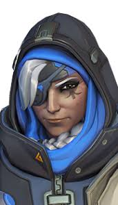
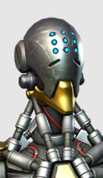
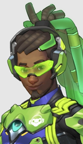

Ana
One of the founding members of Overwatch, Ana uses her skills and expertise to defend her home and the people she cares for.

Zenyatta
Zenyatta is an omnic monk who wanders the world in search of spiritual enlightenment. It is said that those who cross his path are never the same again.

Mercy
A guardian angel to those who come under her care, Dr. Angela Ziegler is a peerless healer, a brilliant scientist, and a staunch advocate for peace.
Lucio
Lúcio is an international celebrity who inspires social change through his music and activism.
